What is Tor Browser ?
Tor Browser
Tor Browser is basically a tool that helps us surf the web just like Chrome, Opera, Firefox or any other web browser. However, unlike standard browsers, it routes all internet traffic through the Tor network. In this way, bypassing all restrictions, it enables us to securely access "Surface Web" and hidden services called "Dark Web" through the Tor network.
Tor Browser was created by customizing the Firefox browser for the Tor project. It is a practical solution for connecting to the Tor network via various operating systems. Although there is no officially supported browser for iOS yet, there are browsers with official support for Android, Windows, Linux and Mac.
Unlike regular browsers, Tor browsers come with various restrictions and security measures, apart from routing all internet traffic through the Tor network. So it is fully optimized for security and privacy.
Before going into the details of browser usage, you should first learn where and how to download the Tor browser.
Downloading Tor Browser
You have multiple alternatives to download the Tor browser. All these alternatives exist so that you can securely download the Tor browser over any network where access is restricted. Let's take a look at the download alternatives in order.
Downloading from the Tor Official Website
The most basic and common method used to download the Tor browser is to download the version suitable for your system from its official website.
To download browser, firstly visit to the torproject.org . If you want, you can choose the language of the website as your native language and understand what is written more clearly.

Click the "Download Tor Browser" button to see the download options.
As you can see on the page that opens, there are multiple download options. Click on "Download in another language or platform" for more options .
As you can see here, there are download links with multiple language options for multi-platforms. From here, just click on the link to download the appropriate version for your operating system. At this point, my suggestion to you is that you prefer the English installation package, which has a much more general use, rather than packages in other languages that you know or can be associated with you. In this way, you can make your real identity much more uncertain with a much wider browser version. You can still choose the language pack you want if you think you will have difficulty or if you prefer for use where your anonymity is not so important. Your native language can be preferred to use at least until you get used to the browser. Just click on the link to download the version suitable for the operating system you will install Tor Browser on. For example, since I will install it on a Windows 64 sixty four bit system, I click the link here.

And also, make sure to save the " signature " file of the installation file you downloaded, by right clicking on the link that " sig " and clicking " save link as ".

You will be using this signature file during the installation phase to test the safety of the setup file.
We discussed first download alternative. However, despite being the first, this is actually most prevented alternative. The country you are in or the internet service provider you use may have blocked the Tor project's websites. So, you may not have been able to access the Tor website while you were following this lecture. In this case, you can either use the second alternative download source or you can download from the website by using VPN. As a matter of fact, since I had trouble accessing the website while preparing this guide, I was able to show the processes by accessing the website through a simple VPN application installed in my browser.

So if you wish, only for download you can use simple VPN extensions that can be installed on browsers or you can try the second download method. Also by the way; I would like you to know that such free VPN services running on the browser are not secure and their keeps log your personal data. Apart from this, I recommend that you read the terms of use before using such free services and find out what information they collect about you.
Leaving aside the use of VPN for now, let's consider second alternative source.
Downloading on Github
In this alternative, which provides a much more uninterrupted access compared to the first, it is possible to access download files on Github.
Firstly, you should visit to the Tor project's Github source; https://github.com/TheTorProject/getTorBrowser
Click on the " release " tab to download the sources published on GitHub.

As you can see, all downloadable files are here. Here you can download the setup file suitable for the operating system you are using. Also, please don't forget to download the signature file with " .asc " extension along with the setup file you downloaded.
As I said before, you will be using this signature file during the installation phase to test the safety of the downloaded file.
If the Github platform is blocked in your country or somehow you have lost access to these Tor installation files on Github, you can download the files using VPN or the next alternative method.
Download via Email
If in any way you can't access Tor browser download sources with the previous methods, just send an e-mail to gettor@torproject.org .
For example, if I want to download the English version of tor browser for windows, I just need to send the "windows en" message. You can write "osx" or "linux" instead of windows and also specify the abbreviation of your preferred language pack.

For example, if you want Tor Browser for Macos in Arabic you can send "osx ar" message.
As you can see, I soon received the download links in response, including many alternative ways.

Now all I have to do is download the setup file and signature file from here. Depending on the density, the response message may be slightly delayed for you. So even if you don't get an immediate response, it's okay.
All these methods and addresses that I have explained so far may change over time for different reasons. In such a case, you should check out the download guide on the Tor official website. You can easily read many documents and guides as it already has your native language support. In addition, you can ask me questions about the course at any time from the question-answer field at the point where you have problems.
There may be some of you wondering, or even critic, why I have just explained a simple download at such length. The reason for this situation is in the structure of the Tor project. Since the Tor project has always struggled with censorship by nature, it has always had to create alternative ways. I have explained it this lengthy because I think it will be useful for you to know alternative ways to access sources in all situations.
Ultimately, you learned how you can obtain the files you need to download for the installation process, including alternative ways. Before installing the browser, you need to verify the setup file.
But why do we need to verify setup file? Were the sources we used not already the official sources of the tor project?
Let's answer this question in the next lecture.
Verifying the Installation File
Regardless of where you downloaded the installation files, the contents of the installation files may have been changed by the attackers before or during the download process.
For example, a file you downloaded from the Tor project's website may have been replaced by a malicious version by the attackers.
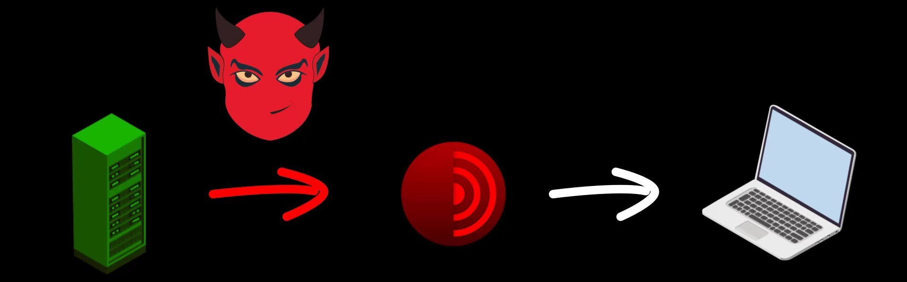
Although such a possibility seems unlikely to many, I would like to remind you that in 2016, Linux Mint servers were hacked and installation image files were replaced with malicious files, and many people downloaded and installed malicious versions of Mint. You can browse for the source .
In addition, even if the direct download source is not hacked, at any time during your download process, the file may have been changed with the malicious version by the attackers who control your internet connection.
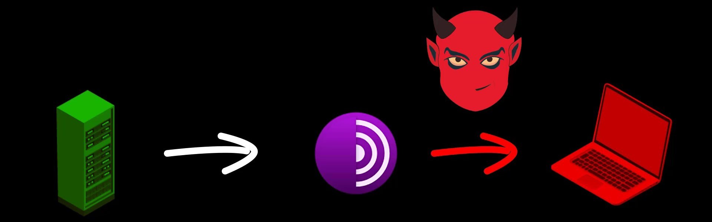
The surest solution to this and similar scenarios is to verify the downloaded file.
For verification, you need to compare the digital signature published by the developers of the Tor project with the signature of your current installation file.
Digital signatures are unique signatures only assigned by developers to the respective version of the program. Since even the slightest change in the content of the installation file will cause this signature to change, you can easily test whether the file has been changed or not through the signature.

When you downloaded the setup file, remember I mentioned that you need to download signature files with ".asc" extension in addition to the setup file. These " .asc " file are actually signature file created with the PGP encryption protocol. This file contain a uniquely generated key. Thanks to this file, we can test whether the content of the program has been changed or not. If you haven't downloaded this signature file, go to the download source and download the signature file of the Tor Browser version you downloaded. To avoid problems during the verification phase, make sure you download the signature file of the exact tor browser version you downloaded earlier. Otherwise, the verification will fail.
Don't worry if the terms I use seem unfamiliar and incomprehensible to you. When you come to the "Encryption" section in the rest of the course, i will be talking more about this terms separately. For now, you only need to focus on verification process. When this process is quite simple, you shouldn't have any problems if you follow the guide carefully.
After obtaining the setup file and signature file, you need to use a separate tool to test the setup file. Although this tool differs according to the operating system used, the functions and uses of them are basically the same.
For example, we will use the Gpg4win tool to verify the signature on Windows . On MacOS , we will verify the signature with the tool called GPG Suite . Finally, we will test signature on Linux using a verification tool that is already installed .

We will be handling the verification and setup processes one by one specifically for the operating system. So you can directly throw the verification and installation video for the operating system you are not using. We will already be discussing how you can implement the same process in each of them on the current operating system.
Without further ado, let's start by discussing how you can verify and install the Tor Browser installation file on the "Windows" system.
Tor Browser Verification and Installation (Windows)
Before the installation process, you should perform signature check to verify the content of the setup file you downloaded. You can use the official guide to follow the verification steps easily. I added this verification guide link in this lecture sources.
Since you will use the " Gpg4win " tool as i mentioned before to check the signature on Windows, you need to get this tool first.
To download the " gpg4win " tool, open the download page by visiting https://gpg4win.org . If you want to donate, you can specify the amount you want here. If you are not going to donate, select the "0" amount and click the download button.
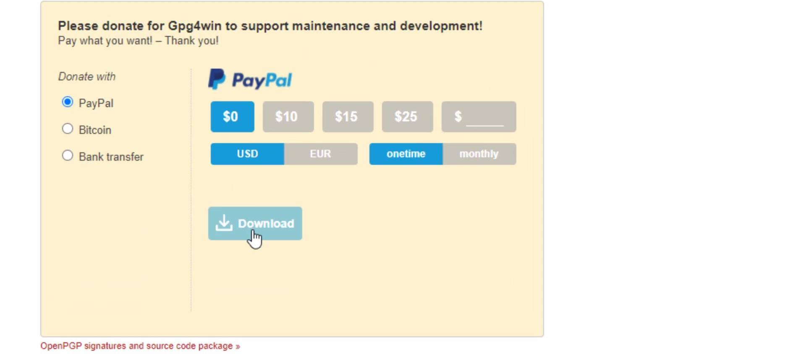
Now, you can install the tool quickly after the download. During the setup process, you can complete the steps without changing the default settings. It asks to reboot the system when the setup process is complete. You don't have to reboot, so finish the installation process by selecting the reboot later option. That's how easy Gpg4win tool is to install.
In order to verify the signature, you first need to import the developer key. For this, let's run the cmd tool, which is the command prompt on Windows, and enter the command.


When you enter the command correctly, the developer key is imported as you can see.
After this process, let's enter command by specifying the locations of the setup and signature files downloaded. Since the files I download are in the downloads folder, I enter command in this way. When entering the command, it is important that you first specify the signature file, that is, follow the command order. When you click the tab key while typing the file names, the name will be completed automatically.

And as a result, the output i got matched with the developer key i imported, proving that my file is signed by the Tor developers and has not been modified. If your file was a modified file, you wouldn't be able to get this output as this signature match wouldn't be provided. In this case, you need to download the setup file and verification key from an alternative download source again and try this verification process again.
Now that we've verified setup file, we can start the Tor Browser installation by double-clicking the setup file.
You can select the language to be used during the installation process here. I continue unchanged.
Unlike many programs, when the Tor browser is installed, it does not spread throughout the system. It maintains all files in a single file location. We can choose where to location the file from the window that opens.
I am not changing the default file location. If you wish, you can specify a different location. The installation process is completed in a short time. If you want to create a shortcut to the start menu and the desktop, you can click finish without unchecking.
In the window that opens, I click the "Connect" button to connect the browser to the Tor network.
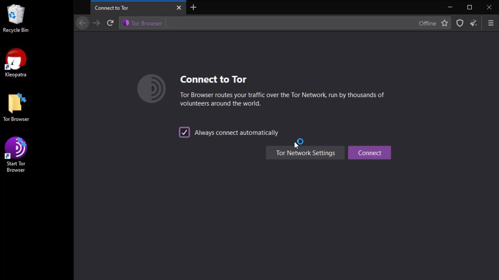
After a short while, the connection is ready and TOR browser is opened without any problems.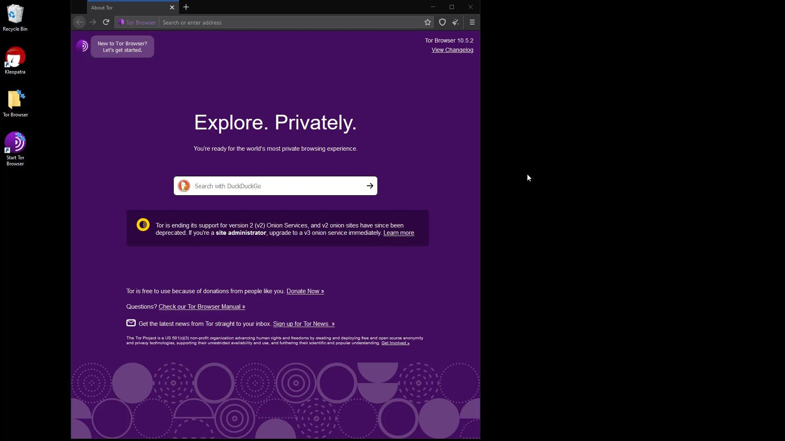
Also, when you check, you can confirm that Tor browser is installed in the folder named " Tor Browser " on the desktop . This is how we safely downloaded and installed Tor browser. We will discuss its use in detail in the next lectures.
Finally, I would like to point out that it isn't have to perform the verification process, but it is an extremely important detail for your security. As there is no difficulty at verification steps, I strongly recommend that you verify before the installation process.
In the next lecture, we will perform the same verification and installation process, this time for the Mac operating system. So if you are not using macOS, you can skip the next lecture directly.
Tor Browser Verification and Installation (MacOS)
Before the installation process, you should perform signature check to verify the content of the setup file you downloaded. You can use the official guide to follow the verification steps easily. I added this verification guide link in this lecture sources.
You will use the GPGSuite tool to verify the setup file before installing . To download tool, go to https://gpgtools.org/ and click the " Download " button.

After the download, you can start the installation by double-clicking the setup file and click "Install" in the window that opens. Let's complete the installation process in a short time by giving all the necessary approvals for the installation.

Now that you have installed the verification tool, you can verify the signature by opening the terminal. If you don't know how to open the terminal, you can access it by searching " Terminal " from the applications section or the search bar .

In order to verify the signature, you first need to import the developer key. Enter the command to import the developer key.
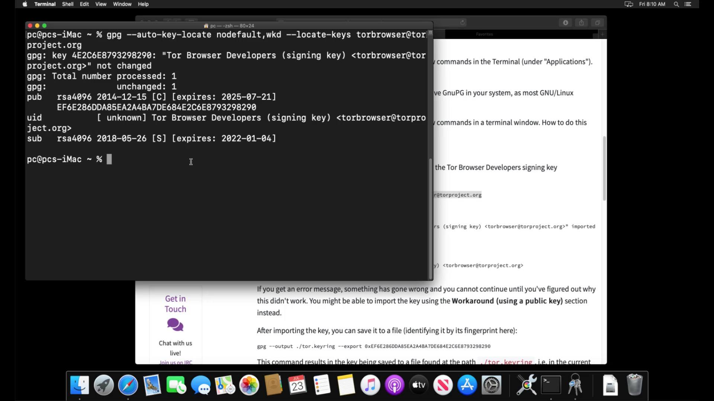
When you enter the command correctly, the developer key is imported as you can see.
After importing the key successfully, let's enter command by specifying the locations of the setup and signature files downloaded. Since the files I download are in the downloads folder, I enter command in this way. When entering the command, it is important that you first specify the signature file, that is, follow the command order. When you click the tab key while typing the file names, the name will be completed automatically.

And as a result, the output i got matched with the developer key i imported, proving that my file is signed by the Tor developers and has not been modified. If your file was a modified file, you wouldn't be able to get this output as this signature match wouldn't be provided. In this case, you need to download the setup file and verification key from an alternative download source again and try this verification process again.
Now that you've verified your file, you can start the Tor browser installation by double-clicking the setup file.
You can drag and drop the Tor application icon onto the "Applications" icon to install Tor Browser on your computer.
When the move process is finished, the Tor browser is ready to use. You can run it smoothly by clicking the browser icon from the applications section. In the window that opens, you should click the "Connect" button to connect the browser to the Tor network.
After a short while, the connection is ready and Tor browser is opened without any problems. Thus, you have installed the Tor browser very easily. We will talk about its use in detail in the following lectures.

Finally, I would like to point out that it is not have to perform the verification process, but it is an extremely important detail for your security. As there is no difficulty at verification steps, I strongly recommend that you verify before the installation process.
In the next lecture, we will perform the same verification and installation process, this time for the Linux operating system. If you are not using Linux you can skip the next lecture directly.
Tor Browser Setup (Linux)
Before the installation process, you should perform signature check to verify the content of the setup file you downloaded. You can use the official guide to follow the verification steps easily. I added this verification guide link in this lecture sources.
You don't need to install an external tool for file verification as it is in other operating systems. Most Linux distributions usually come with a GPG tool. If there is no verification tool in the Linux system you are using, you can reach me from the question and answer section.
In order to verify the signature, you first need to import the developer key. If you are using Linux but have never opened the command line before, you can open it by searching for " command line " or " terminal " or by finding it from the list of applications.

After opening your terminal, let's enter command to get the developer key.
When you enter the command correctly, the developer key is imported as you can see.
After importing the key successfully, let's enter command by specifying the locations of the setup and signature files downloaded. Since the files I download are in the downloads folder, I enter command in this way. When entering the command, it is important that you first specify the signature file, that is, follow the command order. When you click the tab key while typing the file names, the name will be completed automatically.

And as a result, the output i got matched with the developer key i imported, proving that my file is signed by the Tor developers and has not been modified. If your file was a modified, you wouldn't be able to get this output as this signature match wouldn't be provided. In this case, you need to download the setup file and verification key from an alternative download source again and try this verification process again.
Now that you have verified setup file, you can start using Tor browser by extracting it from the archive file to a location you want. When using the Tor browser on Linux, it comes preinstalled without the need for installation. All you have to do is decide where you want to locate this file. I extract the contents of the archive to my desktop location.

To run my browser, I go to the file location I extracted and double click on its icon.

In the window that opens, I click the "Connect" button to connect the browser to the Tor network.
After a short while, the connection is ready and Tor browser is opened without any problems. Thus, we have safely downloaded and installed Tor browser on the Linux system. We will talk about its use in detail in the following lectures.
Finally, I would like to point out that it is not have to perform the verification process, but it is an extremely important detail for your security. As there is no difficulty at verification steps, I strongly recommend that you verify before the installation process.
Using Tor Browser
When i talk about the structure of the Tor network, i have listed the methods you can use the Tor. If you remember, i mentioned that using Tor Browser is not the best way among these methods. The reason why using Tor Browser is not the best method is because the operating system we use the browser is not strictly security-oriented. So, in fact, we will be using the Tor browser in other methods that we consider safer in the continuation of the course. Since the operating systems that we will use the Tor browser for in the methods we consider safe are fully configured for privacy, they will provide a much more secure environment than any other operating system.
So actually using the Tor browser on Android, Windows, MacOS, or a standard Linux distribution is not a completely inefficient way, but it is not the best way for security and privacy. The vulnerabilities that may occur in operating systems or software on the operating system may cause the anonymity and privacy features provided by the Tor browser to become meaningless. In short, using the Tor browser on standard operating systems is practical, but alone is insufficient for security. Without further ado, let's continue the explanation by talking about the use of the Tor browser and its various settings.
Although the installation and verification processes differ slightly for different operating systems, the use of Tor Browser after it is installed is very similar for all systems. In other words, all system users can easily follow the instructions here. I will perform the lectures on Windows for now, you can follow it on any operating system you want.
I double click on the application to open the Tor browser.

As you can see, a simple browser interface that doesn't look much different from the standard Firefox browser welcomed us. Now let's check our connection by going to "check.torproject.org" to test whether we are properly connected to the Tor network.
On the page that opens, we can confirm that our connection is routed through the Tor network as it should. At this point, if you have not encountered this confirmation statement, you may have an internet connection where the Tor network is blocked.
In such cases, you can choose to use Tor bridge connection or VPN to bypass the block. We will talk about VPN usage in the following lectures, for now, let's continue with the explanations by talking about the Tor bridge connection.

In addition, even if you can access the Tor network smoothly while you follow this lecture, it will be useful to learn how to use the bridge connection in case you encounter a potential block. So, even if your Tor connection is fine, please continue course without leaving the curriculum layout.
Providing Bridge Connection
When i talked about the working structure of the Tor network at the beginning of the course, i mentioned that the list of servers in the Tor network is publicly published and therefore Tor servers can be easily blocked.

Authorities such as the government, your service provider, or your network administrator can easily blocking the Tor network through this publicly published list of servers.
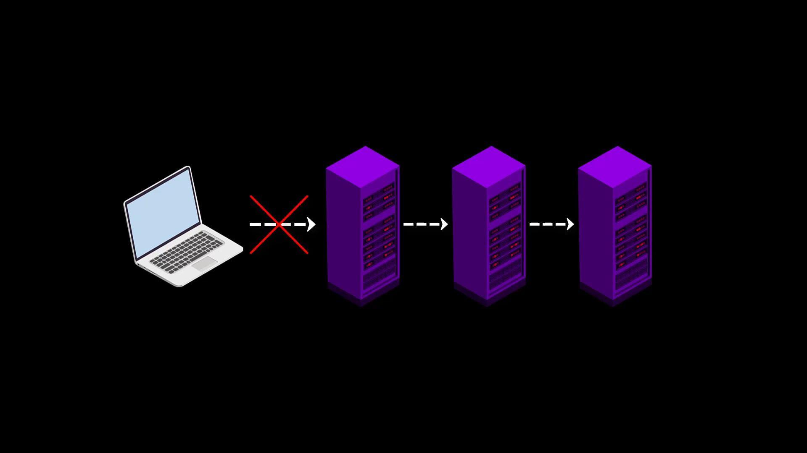
It is possible that you will often encounter situations where the Tor network is blocked because it is easy to block.
In such cases, you can use the bridge connections provided by the Tor project to overcome the obstacle.
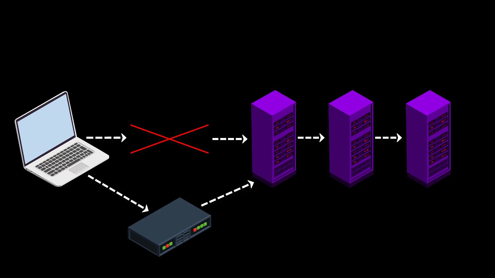
Since the list of bridge routers is kept confidential, all bridge connections cannot be blocked at once, so even if the servers are blocked, access to the Tor network can be achieved over the bridge connection.

To establish the bridge connection, you need to visit the https://bridges.torproject.org/options
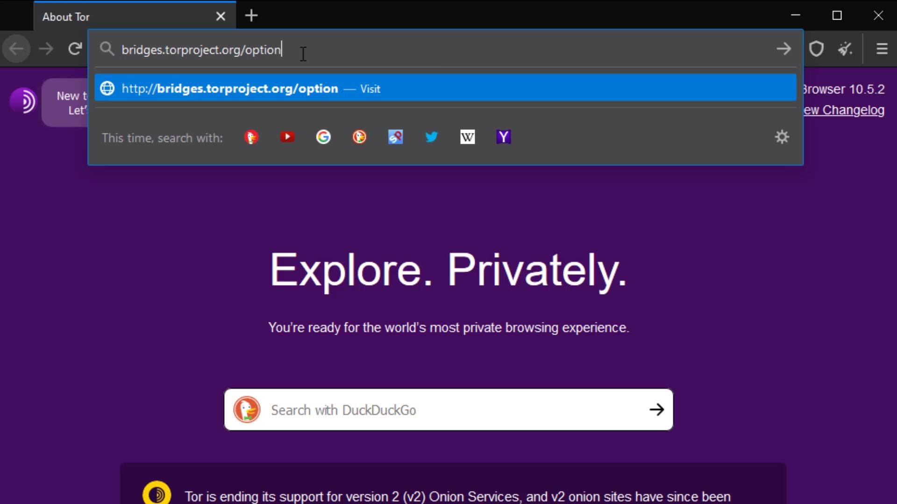
After reaching the website, select the obfs4 option and click the "get bridges" button. Now lastly enter the security code.

After entering the security code, you can see the address information required for the bridge connection. You can copied this addresses from here.

If tor is blocked on the internet you are connected to, this website is probably also blocked. If you haven't been able to obtain bridge addresses in this way, you can access this website using any VPN service. You can also get these addresses from within the Tor browser as an alternative to the VPN option. When we talking about Tor Browser settings, you will see how you can get bridge addresses from within the Tor browser.
Now let's click the three-line icon on the right side of browser to open the menu to make the necessary settings for the bridge. Click on " Options " from the menu that opens. After the options window opens, click on the " Tor " tab on the left. Here we will make the necessary settings for the bridge connection. To configure the bridge, first, let's checking the "use bridge" box.

If you have bridge addresses, you can click on the " Provide a bridge " option and enter the bridge address in this field.

Thus, the Tor network will be provided over the bridge connection you have specified. To test whether a bridge connection is available, let's go to "check.torproject.org" again and check the nodes used to connect to this address.

If you use the "Select a built-in bridge" option, the bridges built into the tor browser are used. If you select the obfs4 option here, a built-in bridge will be used.
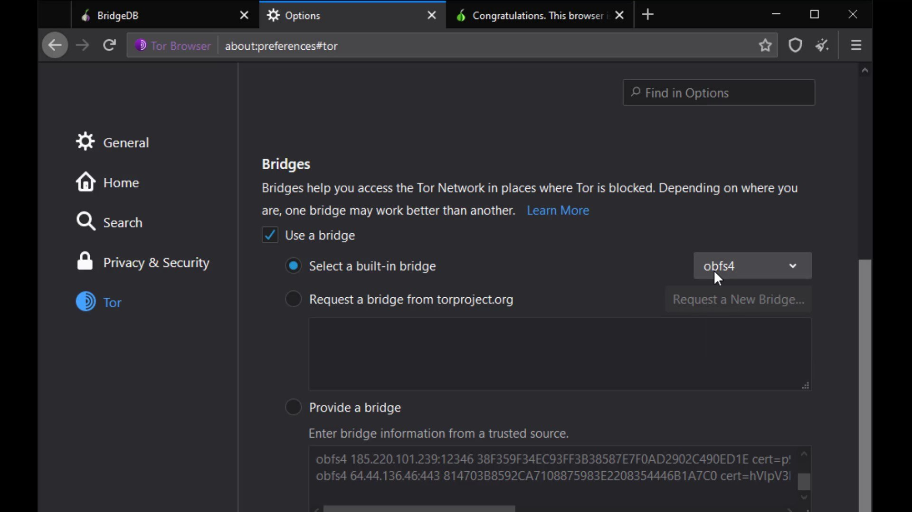
In addition, the bridge address can be defined automatically with the "request a new bridge" option.
You can easily overcome situations where the Tor network is censored by using all these methods.
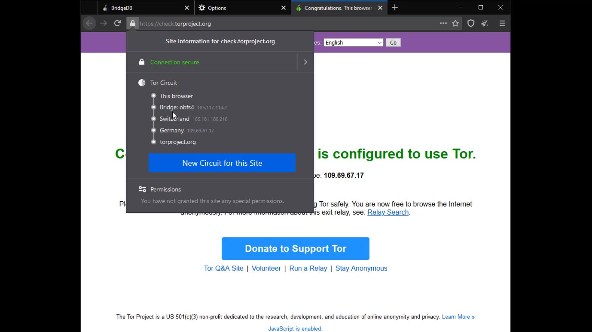
If you are using the bridge connection and still have problems with the access, you are probably dealing with a censorship mechanism that detects that you have accessed the Tor network by thoroughly analyzing your network traffic. As a simple solution to this situation, you may prefer to use the Tor network over VPN. Moreover, using VPN will may provide you with much more security measures as well as bypassing the censorship.
If you don't have access blocked to the Tor network, using a bridge connection won't make sense because won't provide you with extra security. Please note that the purpose of the bridge is only to bypass censorship, not to provide extra security. However, in some cases, you may want to use a VPN, even if you don't have access block to the Tor network. To better understand why, let's explain the effects of VPN usage on the Tor network by handling Tor connection over VPN.
TOR over VPN
When you want to access the internet through the Tor network, the traffic between you and the entry node assigned to you can be monitored by malicious observers.


When you connect to the Tor network over VPN, your internet access appears as like that.
Your Computer -> VPN -> Tor -> Internet
Advantages of connecting to the Tor network over VPN;
- Your internet service provider or any observer on your network can't see that you are connecting to the Tor network. It only sees that you have established a VPN connection. Since VPN use is much more common than the Tor network, this creates relatively little doubt about your internet traffic.
- Because the communication between you and the Entry/Guard node will be encrypted by the VPN, observers or malicious Entry/Guard nodes on the network cannot breach your privacy.
- Since the Tor entry node will see the ip address of the VPN service you are using instead of your real ip address, you will hide your real ip address even if the entry node is malicious. However, for real anonymity at this point, your VPN service shouldn't be keep logs. Otherwise, your anonymity may be violated by associating your real ip address with the ip address of the VPN service.

In addition to these advantageous features, there are also disadvantages we experience when connecting to the Tor network over VPN ;
- Your VPN service knows your real IP address. If it keeps logs or is an unreliable service for any reason, it can reveal your true identity. At this point, it is very important to choose reliable service.
- If the web address you are visiting to doesn't contain SSL protection, malicious exit nodes may read by the website response to you. Although it isn't associated with your real ip address, there is a possibility that your data, ie your privacy, may be compromised by the exit node.
Because VPN only encrypts the data sent from you to the entry node, the data sent by the website cannot be encrypted by the VPN while reaching the exit node. In such a case, if the exit node is malicious, it may violate your privacy by reading the response sent from the website. However, this applies to any site that doesn't have an SSL certificate, i.e. doesn't offer a secure connection that appears as https. In other words, it isn't a disadvantage of using VPN. I have just added it to the disadvantage list to indicate that visiting non-HTTPS addresses with only VPN use can also compromise your privacy. The only solution to this situation is to visit websites that use an SSL certificate.
If the website you want to visit doesn't have SSL encryption, remember that the content you write and read can be easily monitored by those who listen to your network.
- Another disadvantage is that in addition to the slowness of the Tor network, using a VPN will slow the internet speed more. However, considering the security it brings, this is not a big loss.

Things to consider when choosing a VPN;
The priorities you should be aware of when using the Tor network over VPN; It is to prefer VPN services that provide uninterrupted service, never keep logs and can make payments anonymously. If you ask why these are important;
- If your VPN connection drops when you connect to the tor network over VPN, observers on your network can learn that you are connected to the tor network. In addition, the entry node, which is the first node, can learn your real ip address during the connection drops.
- If the VPN service keep logs, all the security and privacy measures you take will be in vain, as the origin point of all the activities you do will be known by your VPN service. Logging means that your entire internet record is associated with your identity. In such a case, it doesn't make much sense to be using the Tor network.
- When paying for a VPN service, it is very important to pay in cryptocurrency to protect your holistic anonymity. Thus, when the ip address of the VPN service standing in front of your real ip address is searched, it cannot be directly associated with your real identity. In the course of the training, we will also be talking about how cryptocurrencies give us anonymity.


At this point, you have to decide for yourself which is the most ideal VPN service. It can be difficult to determine which VPN service is trusted. So you may want to check out this VPN comparison chart by That One Privacy Site, which analyzes almost 200 VPN providers based on their jurisdictions and policies.
https://www.safetydetectives.com/best-vpns/
For example, in the period I reviewed this list, express VPN was chosen as the most ideal VPN service.
In addition to being on the list, according to my personal experience, I can recommend you to use "Express VPN". My recommendation reason; It has been proven by independent organizations that it doesn't keep logs and prevents the leak of your real IP address by disconnecting the internet as soon as the VPN connection is lost. You can use the crypto money "bitcoin" for payment, and you can also get a refund if you are not satisfied by trying the service for a month.

Although this service is ideal in my opinion, you can of course take a look at alternative services and make your own decision. In addition, what I explain here isn't an advertisement for the service. It is a service that I have specified to share my personal opinion for suggestion purposes. I have created a special discount link for this course so that only those who want to use it can use it at a discount. I have added the link to the resources for this lecture. You can try it if you want to use it.
After choosing the right VPN service, all you have to do to use Tor over VPN is to start the VPN service of your choice before connecting to the Tor network. To connect to the VPN service, you need to download and install the application of your preferred service on your system. After the installation process, you can make the VPN connection very easily.

VPN over TOR
In this connection type, in contrast to the connection type i mentioned in the previous lecture, your internet access looks like the this.

Your Computer -> Tor -> VPN -> Internet
At the time of preparing this course, there were only 2 VPN service providers, "AirVPN" and "BolehVPN", that provided this service.
If we briefly touch on the advantages and disadvantages of using VPN over Tor;
Advantages
- Since you are connected to the VPN server via Tor, the VPN provider cannot see your real IP address, only the Tor exit node ip address.
Assuming that you pay for the VPN service anonymously with secure cryptocurrency, your anonymity will not be compromised even if the VPN service keeps a log.
- You can use it to visit websites that block visitors from the Tor network. Some websites block users connected to the tor network for security reasons.
When you use VPN over TOR, your VPN connection will appear, so you can overcome this obstacle. However, it would make more sense to use only VPN to visit such websites.

Disadvantages
- Your internet service provider and anyone observing your network can see that you are connecting to the Tor network.
- Your VPN provider can see your internet traffic. However, because the traffic comes through the Tor network, it can never be directly associated with you if it does not know your real identity indirectly.
- You cannot access websites with onion services via VPN.
- The fact that the Tor network connects to a single VPN point can be a disadvantage for the timing attacks i mentioned earlier. However, if you made the payment anonymously, even if information is leaked from the VPN service, it cannot be directly associated with you.
- It is somewhat more difficult to configure and privacy is more likely to be compromised by incorrect configuration. Configuration settings may vary depending on the service provider used.


When we consider all these advantages and disadvantages, it can be said that using the second method, "VPN over Tor", is not a good choice for many people.


Although Tor alone provides you with very good anonymity, you can decide to use the Tor network over VPN or alone, depending on your needs, considering the advantages and disadvantages of using VPN. For example, if the address you want to connect to has an SSL certificate and you don't want to hide the information that you are connected to the Tor network from your internet service provider or observers, you don't have to use a VPN.

Yes, you have finally learned to bypass all obstacles and securely connect to the Tor network via the Tor browser. Now let's talk about the Tor browser settings and why those settings should exist.
Tor Browser Settings
When you visit any website; By clicking the this icon in the search bar of your browser, you can see through which " Tor Circuit " you are connected to the website.
Also, if the website has SSL certificate, there is the phrase "connection secure" here as you can see.First of all, if we start with the certificate audit; For example, I am currently at "check.torproject.org" and can view information on whether this website is safe for communication.
Also, I can click the "More information" button to get more details and to assign specific permissions to the site.

As you can see, I have received more detailed information about the certificate of the site.
Apart from the certificate details, you can set permissions for the current website from the " Permissions " tab. In order to change the permissions, you need to uncheck the "use default" option.
As you can see, you can allow the feature you want and block the ones you want. However, for your security, it would be much better to keep the settings here as default. But of course, you can change these permissions differently from the default, especially for the websites you trust, whenever you need them.From the Media tab, you can obtain the information of the materials such as pictures and videos owned by the website and if you wish, you can block these contents.

In the General tab, you can obtain general information such as the title and address of the website.

I also want to remind you that this feature, the ability to get information about the certificate and manage site permissions, is not only available in the Tor browser. I just wanted to talk about the purpose of use, in case you don't know or don't care if you know. Checking such information about the website you are visiting to and managing its permissions is a very good habit in terms of security. Even if you haven't paid attention to this until now, you have now learned that it is an important detail to pay attention to this part for your privacy.
You know Tor Circuit gives the information of the servers you are connected to in the Tor network.
As you can see, I am currently communicating with "check.torproject.org" via this Tor circuit. Except for the first node in this circuit, the middle and exit nodes can be easily changed with the "New Circuit for this Site " button here.
But why does the entry node, stays same despite the renewal process?
This is because the entry node in the circuit, is selected as "Guard". 
For more technical details, you can read the article published by the University of Minnesota from the link at this lecture resources.
The permissions section under the Tor Circuit shows the site-specific permissions. Now let's open "settings" to talk about other settings. I will cover the permissions issue again as i explain the settings in a moment. Now let's talk about "security level" and "new identify" buttons.
The security level button is a shortcut button that shows the security level setting in your browser and directs you to the settings when you want to change it.
We will talk about these security level settings and details later.
The "new identify" button, closes all existing tabs and sessions you have opened on the browser, and restarts the browser by resetting your identity.
The locations and functions of all these buttons may change with the updates over time. So the browser you are using while following this course may look a little different from mine. However, please note that such changes don't matter at the point of keep going to education, we are basically talking about what is necessary for safety in this course.
If the location of the buttons changes, you can find their location with a short lookup. If a new feature is added or existing features change, you can understand their use by reading short feature descriptions. In short, I want to say that you should always read new documents for more features and constantly focus on what you can pay more attention to for your own safety, not limiting yourself to what you have learned in this course. Of course, the more we strive to ensure our security, the more those who want to violate our security will do. For this reason, techniques and security methods will be constantly updated and will change over time. You can only stay safe as long as you are open to innovation.
After the brief explanation, let's open our browser settings and click on the " Privacy and Security " tab to browse the settings that concern our privacy .


Onion Services

With this setting, "onion available" info will appear if the website you are visiting has a known onion service address. You can visit torproject.org to try it out.


Cookies and Site Data
The settings in this section allow you to control the cached data of the sites. You can perform operations such as deleting and managing from here. However, as you can see, all data records are currently marked to be deleted automatically when you close the browser.


Logins and passwords
The "Use master password" feature here ensures that if there are passwords for your logins in the Tor browser, these passwords are also protected with a master password. This means that If you create a Master Password you will be asked to enter it once per session when Tor Browser retrieves saved information protected by the password. In other words, it provides an extra protection for local security. This feature prevents someone who has accessed your browser locally from accessing your information. I mean by the "accessing locally", it describes situations such as your computer being for inspection or hacking by someone.

Permissions

While we were talking about permissions earlier, we mentioned that you can define special permissions settings to websites. Unlike the permission settings we mentioned earlier, the permissions setting here allows you to define common permission setting for all websites in the tor browser.
For example, if you take a look at the location setting; In the window that opens, if you have defined a website that can access location information exceptionally, it will appear. In addition , it will be sufficient to check the " Block new requests asking to access your location" option below to completely block location information except for exceptional websites .
I suggest you select this option for all permissions one by one if not selected by default. Since you can change these permissions specific to the website, it would be much better to block these permissions altogether in order to ensure general protection.
In addition, I strongly recommend that you choose the " Prevent accessibility services from accessing your browser " option under the permissions .
Security
In this section, there are security levels that you can use to neutralize possible attacks from all websites you visit or will visit.
If the "standard" security level is selected, your browser will behave just like an standard web browser, vulnerable to many possible attacks from websites. It has already been state here that all tor browser and website features will be enable at this security level. So this option does not impose any restrictions.
If the "safer" security level is selected , partial security is provided by disabling the features specified in the list. Of course, there may be losses in the functionality of the site used together with the closed features.
If the "safest" security level is selected , many features of websites will be disabled for even more comprehensive security. It is generally used to access the website in a much more simple and secure way. Disabled features are noted in the list.
Please also note that all disabled features may vary based on discovered vulnerabilities over time. In other words, in addition to the features that appear in me now, different features may have been disabled in the period you use.
Ultimately, using these security levels, you have to choose and consider the status of the website you want to communicate with. If the website you are visiting is unreliable and you still have to visit it, you can choose "safest" security level. Or, if the surface is one of the reliable services on the web, you can just select "standard " or "safer " option. It's all about what you can expect from the website and what kind of the site is.
Deceptive Content and Dangerous Software Protection
If you activate the feature in this section, you will be warned before accessing content with a previously reported security risk. In additionally if you want to block dangerous downloads you can activate "block dangerous downloads" option. Enabled this feature can help you avoid unintentional security risks.
Certificates

It would be more better choice to keep the certificate settings "ask you every time" selected. However, if you have a special situation, you can choose to "select one automatically".
Details for Additional Security
Extensions to secure the browser are already installed by default. Apart from these, it is strongly not recommended to install new extensions.

Similar to extensions, I strongly recommend that you don't install new themes and use the default theme among existing themes. It is never recommended to change such default settings for a much more ambiguous user identity we mentioned earlier.
Installing new extensions can affect Tor Browser in unpredictable ways, causing the Tor browser you are using to create a unique fingerprint. If your Tor browser has a unique fingerprint, that is, if you have a usage habit that can be noticed among other users, your actions will no longer be anonymous and you can be tracked even if you are using Tor Browser.
Basically, the settings and features of each web browser create a unique " web browser fingerprint ". Since most web browsers do not care about this, each user can create a unique fingerprint that can be tracked on the internet. Unlike standard browsers, the Tor browser is specifically designed to ensure that users' fingerprints are nearly the same. This means that the fingerprints of all Tor Browser users are similar. This situation makes it difficult to track tor user.
Also, each new extension has the potential to increase the attack surface of the Tor Browser application. This could cause personal data to be leaked or an attacker to infect Tor Browser with malware. Even the extension itself may have been maliciously designed to track you.
Tor Browser application comes with "HTTPS Everywhere" and "NoScript" extensions installed. Installing a extension other than that may prevent you from being anonymous. However, over time, there may be changes in the extension used by default, that is, the extension that come with the Tor browser. If this is the case, the Tor browser has made it available because it is sure of the security and benefits of this extension . However, if you are skeptical about the any extension , you can find a lot of information about why the add-on is located on the Tor browser and its possible effects by doing a short internet search. You can also follow the Tor project's blog to many such news.
For now, adding a new extension is not on the agenda, but this situation may have changed during the period you followed the course. To stay safe, I recommend you to be a conscious user, that is, to constantly question and research. Please note that when it comes to security, you have a very large part of the responsibility.
Similar to the previous clauses, the use of plugins or language packs should not be used as it may pose a risk to the integrity of your privacy.
Finally, I don't recommend using the browser in full screen mode or maximized mode. If you use full screen, you may leak information about the size of the screen you are using. This seemingly unimportant detail is important, and as a habit, I strongly recommend using your browser always with standard windowed size. If all these measures seem too much for you, I would like to point out that security is a whole and the number of details who should pay attention according to the needs of people must increase at the expense of being paranoid. If I need to give a simple but striking example for the moment; It turned out that data can be stolen from isolated computers without internet connection by changing the screen brightness.
So when it comes to security and privacy, it isn't strange to be paranoid. Please keep in mind that security is just a temporary illusion, that illusion tricks have to be exposed when the day comes. In short, in the real world, security is just a perception, we only think we are safe until it is violated. While the sense of temporary security is good for well-being, in most cases it is the complacency it provides that brings the real security risk. I'm not saying be paranoid, but I always wanted to mention that it will be a good habit to research what you can do for more security.
Android Tor Browser Installation
While you don't have access to your desktop devices, you can use the Tor browser developed specifically for the Android platform to securely access the Tor network on your Android device. First, let's open PlayStore. To get the browser, simply search for " Tor Browser " on the PlayStore . Let's install the application published by Tor developers.
Other applications offered by developers other than Tor developers are not secure. So make sure you download the right application.After the installation is completed, let's open the application and click the " Connect " button and wait for the browser to connect to the tor network.
You can choose the level of security you want to use the browser from here. Which features are disabled at what level is clearly written here.
After the selection, just type the web address you want to go to in the bar here. I visit check.torproject.org to confirm that I am connected to the tor network.

And as you can see I can confirm here that I am connected to the tor network. So, i can use this application to surf the Tor network with my Android device when necessary.
When we look at the settings of the browser, there are settings customized for Tor in addition to the settings of standard web browsers.
For example, you can change the security level in the security settings.


About iOS Tor Browser
Tor developers recommend an iOS app called Onion Browser, which is open source, uses Tor routing, and is developed by someone who works closely with the Tor Project.
However, Apple requires browsers on iOS to use something called Webkit, which prevents Onion Browser from having the same privacy protections as Tor Browser. You can check out the link in this lecture resource to learn more details.I don't recommend using it unless it is not have to. As I don't think it safe, also i won't discuss alternative iOS applications and their uses in this lecture. Only if you really need it, you can find this Onion Browser develop by Mike Tigas by searching through the App Store, but is unreliable about security and privacy. If the developers of the Tor project release a stable iOS application, I will have included in this section already.
Summary
We saw all the settings that concern us on Tor Browser and talked about all the configurations required for our security. At this point, you might be thinking, "He's told all this but still hasn't touched on how to surf Tor hidden services in other words, Dark Web sites ." If so, I would like to clarify again briefly the situation we have explained before and clear all possible confusion.
In this section, you learned how to connect to the Tor network through the Tor browser and how the browser security settings should be when using the Tor browser. So you have seen how you can surf anonymously on the "Surface Web" over the Tor browser. As a matter of fact, the "check.torproject.org" address you visit is a standard website in the area we call "Surface Web". In other words, with the information you have learned so far, you can surf the "Surface Web" more securely and anonymously than ever before, by overcoming all obstacles via the Tor browser. Apart from that, if you are wondering how you can access ".onion" hidden services, namely "Dark Web" sites on Tor, we will discuss this issue in detail in the future. For now, you just have to be a little more patient and continue to study by adhering to the course curriculum, being aware that all the course content is interconnected.
At the end of the course; You will realize yourself that all the course curriculum are prepared in a way that will make it easier for you to learn by progressing in kenjankşın with each other. In the next section, we will continue explanations the Tail operating system, which is considered to be much safer than using only the Tor browser.

Free Anonymity & Privacy Course on Youtube
You can click on this card to access the free youtube playlist of the tutorial series. Please note that this tutorial series is introductory training only. This free tutorial series will only provide you with an introductory knowledge of anonymity and privacy.